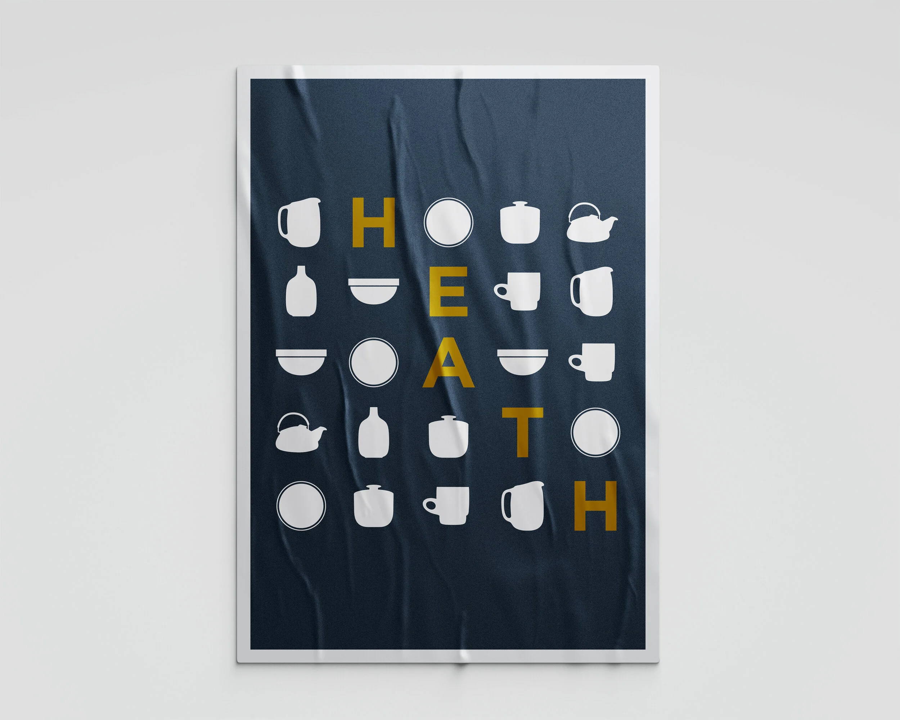
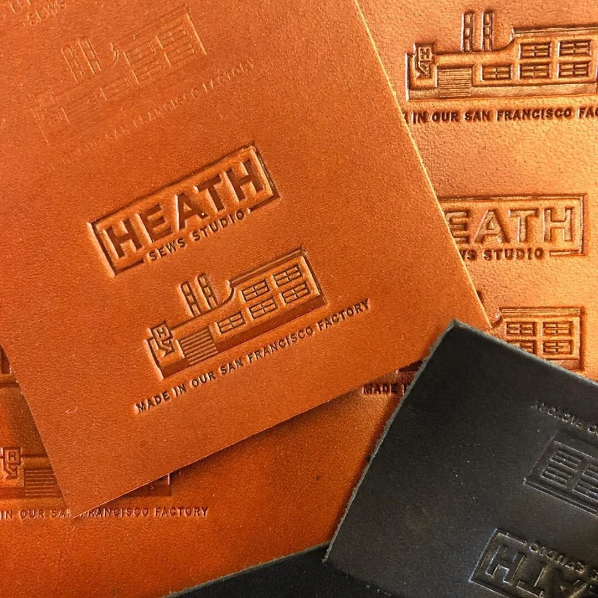
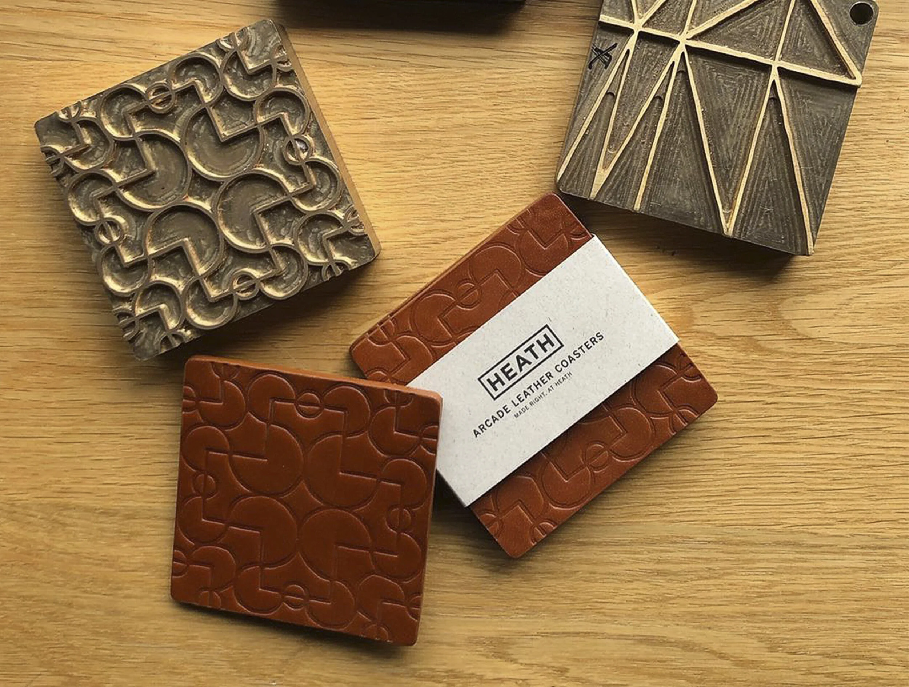
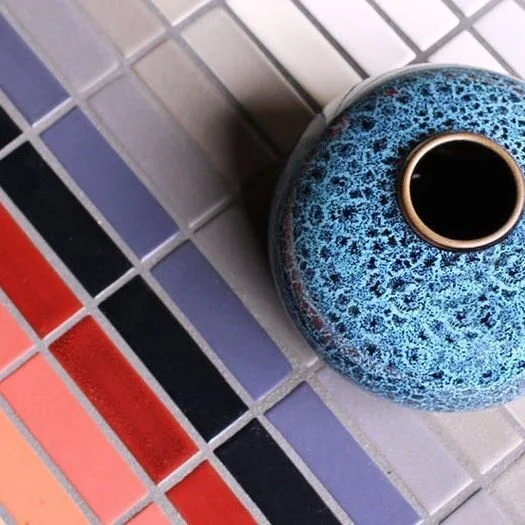
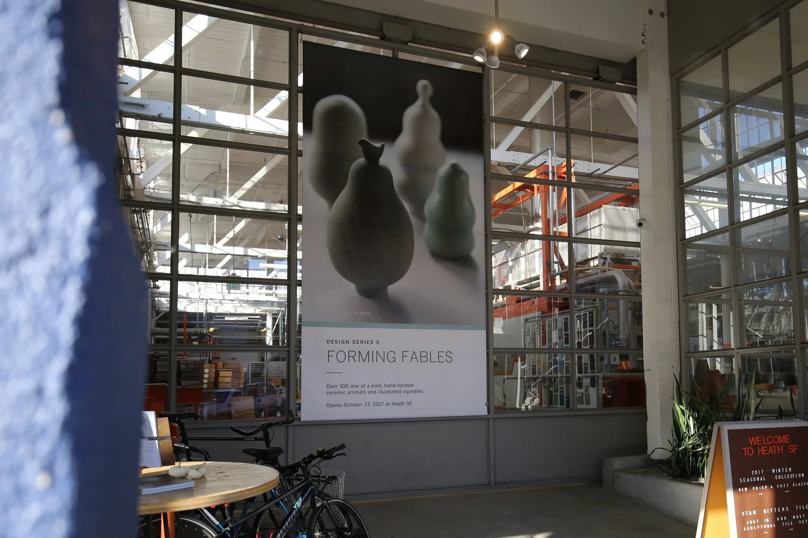
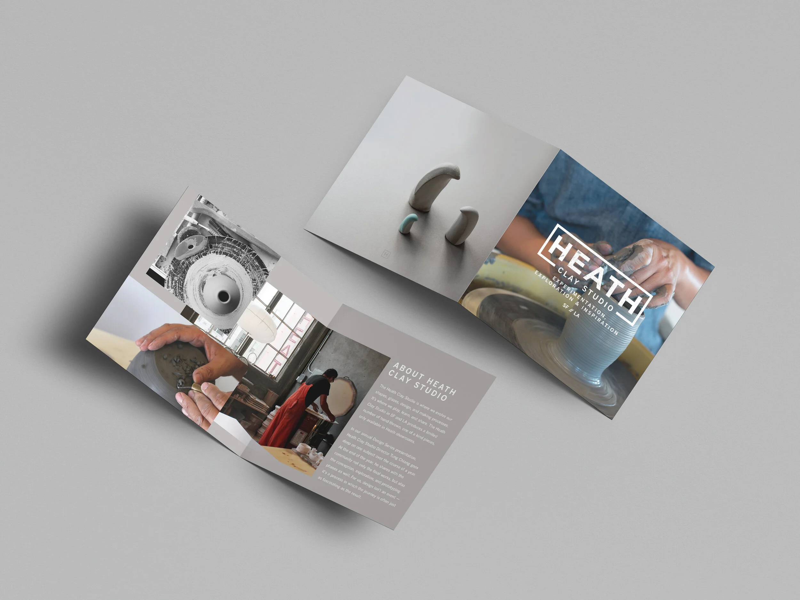
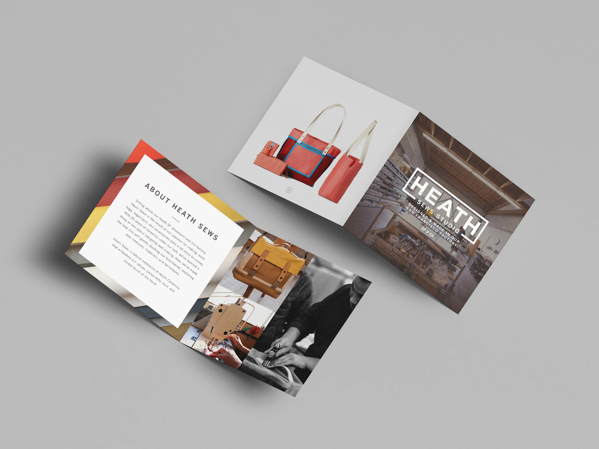

Heath Ceramics / Brand & Creative Direction
Heath Ceramics
Leading in-house design for the historic California pottery, and taking the brand somewhere it had never been: off the wheel.
Leading in-house design for the historic California pottery, and taking the brand somewhere it had never been: off the wheel.
Heath had been pumping things out of clay since 1948. My job was everything that was not clay.
Creative strategy for the first ever non-clay goods. Cut and sew bags, flatware, and more.


Eat some hay, make things out of clay, lay by the bay.

A brand identity system for Heath’s sub-brands, plus design systems for events across the year.
I shot the lifestyle and product photography, built the packaging systems, and crafted the print, retail graphics and web assets.



